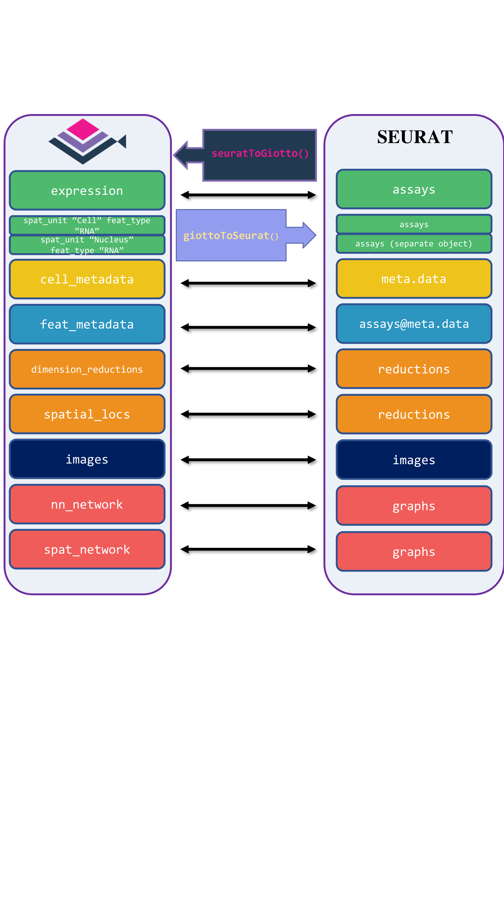
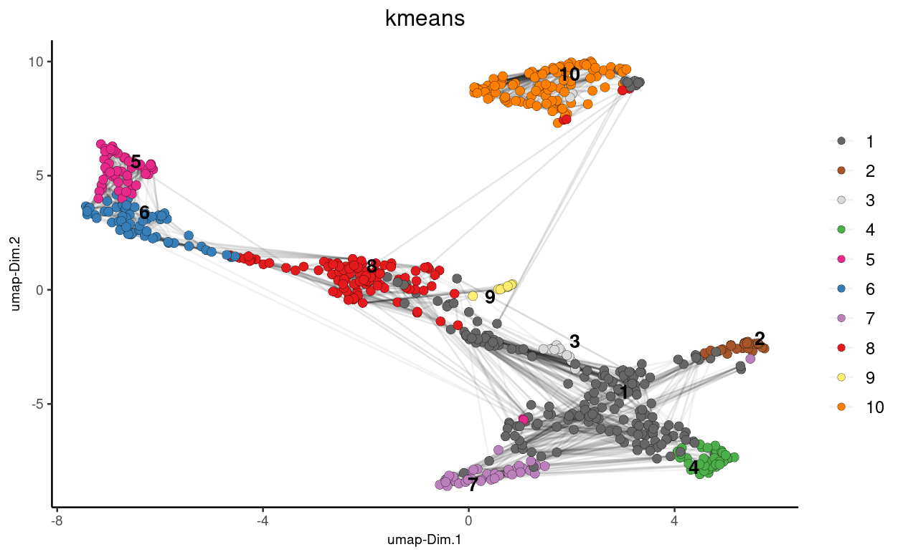
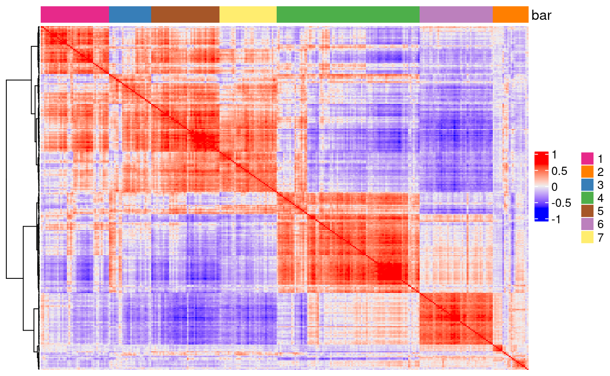
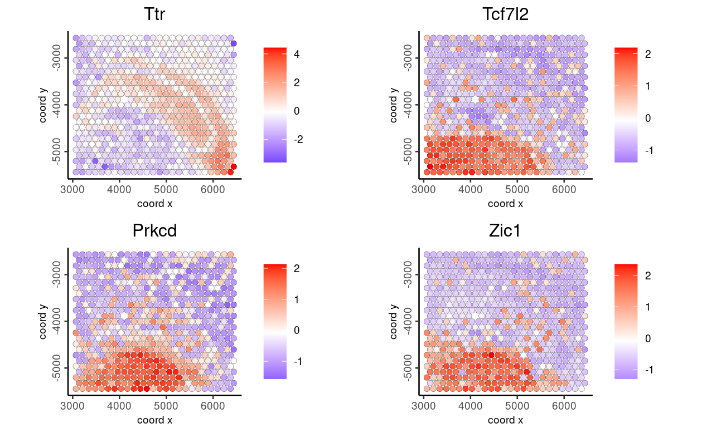

15 Interoperability with other frameworks
Iqra
August 7th 2024
Giotto facilitates seamless interoperability with various tools, including Seurat, AnnData, and SpatialExperiment. Below is a comprehensive tutorial on how Giotto interoperates with these other tools.
15.1 Load Giotto object
To begin demonstrating the interoperability of a Giotto object with other frameworks, we first load the required libraries and a Giotto mini object. We then proceed with the conversion process:
Load a Giotto mini Visium object, which will be used for demonstrating interoperability.
15.2 Seurat
Giotto Suite provides interoperability between Seurat and Giotto, supporting both older and newer versions of Seurat objects. The four tailored functions are giottoToSeuratV4(), seuratToGiottoV4() for older versions, and giottoToSeuratV5(), seuratToGiottoV5() for Seurat v5, which includes subcellular and image information. These functions map Giotto’s metadata, dimension reductions, spatial locations, and images to the corresponding slots in Seurat.

15.2.1 Conversion of Giotto Object to Seurat Object
To convert Giotto object to Seurat V5 object, we first load required libraries and use the function giottoToSeuratV5() function
Now we convert the Giotto object to a Seurat V5 object and create violin and spatial feature plots to visualize the RNA count data.
gToS <- giottoToSeuratV5(gobject = gobject,
spat_unit = "cell")
plot1 <- VlnPlot(gToS,
features = "nCount_rna",
pt.size = 0.1) +
NoLegend()
plot2 <- SpatialFeaturePlot(gToS,
features = "nCount_rna",
pt.size.factor = 2) +
theme(legend.position = "right")
wrap_plots(plot1, plot2)
15.2.1.1 Apply SCTransform
We apply SCTransform to perform data transformation on the RNA assay: SCTransform() function.
15.2.2 Conversion of Seurat object Back to Giotto Object
To Convert the Seurat Object back to Giotto object, we use the funcion seuratToGiottoV5(), specifying the spatial assay, dimensionality reduction techniques, and spatial and nearest neighbor networks.
giottoFromSeurat <- seuratToGiottoV5(sobject = gToS,
spatial_assay = "rna",
dim_reduction = c("pca", "umap"),
sp_network = "Delaunay_network",
nn_network = c("sNN.pca", "custom_NN" ))15.2.2.1 Clustering and Plotting UMAP
Here we perform K-means clustering on the UMAP results obtained from the Seurat object:
## k-means clustering
giottoFromSeurat <- doKmeans(gobject = giottoFromSeurat,
dim_reduction_to_use = "pca")
#Plot UMAP post-clustering to visualize kmeans
graph2 <- Giotto::plotUMAP(
gobject = giottoFromSeurat,
cell_color = "kmeans",
show_NN_network = TRUE,
point_size = 2.5
)
15.2.2.2 Spatial CoExpression
We can also use the binSpect function to analyze spatial co-expression using the spatial network Delaunay network from the Seurat object and then visualize the spatial co-expression using the heatmSpatialCorFeat() function:
ranktest <- binSpect(giottoFromSeurat,
bin_method = "rank",
calc_hub = TRUE,
hub_min_int = 5,
spatial_network_name = "Delaunay_network")
ext_spatial_genes <- ranktest[1:300,]$feats
spat_cor_netw_DT <- detectSpatialCorFeats(
giottoFromSeurat,
method = "network",
spatial_network_name = "Delaunay_network",
subset_feats = ext_spatial_genes)
top10_genes <- showSpatialCorFeats(spat_cor_netw_DT,
feats = "Dsp",
show_top_feats = 10)
spat_cor_netw_DT <- clusterSpatialCorFeats(spat_cor_netw_DT,
name = "spat_netw_clus",
k = 7)
heatmSpatialCorFeats(
giottoFromSeurat,
spatCorObject = spat_cor_netw_DT,
use_clus_name = "spat_netw_clus",
heatmap_legend_param = list(title = NULL),
save_plot = TRUE,
show_plot = TRUE,
return_plot = FALSE,
save_param = list(base_height = 6, base_width = 8, units = 'cm'))
15.3 SpatialExperiment
For the Bioconductor group of packages, the SpatialExperiment data container handles data from spatial-omics experiments, including spatial coordinates, images, and metadata. Giotto Suite provides giottoToSpatialExperiment() and spatialExperimentToGiotto(), mapping Giotto’s slots to the corresponding SpatialExperiment slots. Since SpatialExperiment can only store one spatial unit at a time, giottoToSpatialExperiment() returns a list of SpatialExperiment objects, each representing a distinct spatial unit.

To start the conversion of a Giotto mini Visium object to a SpatialExperiment object, we first load the required libraries.
library(SpatialExperiment)
library(ggspavis)
library(pheatmap)
library(scater)
library(scran)
library(nnSVG)15.3.1 Convert Giotto Object to SpatialExperiment Object
To convert the Giotto object to a SpatialExperiment object, we use the giottoToSpatialExperiment() function.
The conversion function returns a separate SpatialExperiment object for each spatial unit. We select the first object for downstream use:
15.3.1.1 Identify top spatially variable genes with nnSVG
We employ the nnSVG package to identify the top spatially variable genes in our SpatialExperiment object. Covariates can be added to our model; in this example, we use Leiden clustering labels as a covariate:
# One of the assays should be "logcounts"
# We rename the normalized assay to "logcounts"
assayNames(spe)[[2]] <- "logcounts"
# Create model matrix for leiden clustering labels
X <- model.matrix(~ colData(spe)$leiden_clus)
dim(X)- Run nnSVG
This step will take several minutes to run
15.3.2 Conversion of SpatialExperiment object back to Giotto
We then convert the processed SpatialExperiment object back into a Giotto object for further downstream analysis using the Giotto suite. This is done using the spatialExperimentToGiotto function, where we explicitly specify the spatial network from the SpatialExperiment object.
giottoFromSPE <- spatialExperimentToGiotto(spe = spe,
python_path = NULL,
sp_network = "Delaunay_network")
giottoFromSPE <- spatialExperimentToGiotto(spe = spe,
python_path = NULL,
sp_network = "Delaunay_network")
print(giottoFromSPE)15.3.2.1 Plotting top genes from nnSVG in Giotto
Now, we visualize the genes previously identified in the SpatialExperiment object using the nnSVG package within the Giotto toolkit, leveraging the converted Giotto object.
ext_spatial_genes <- getFeatureMetadata(giottoFromSPE,
output = "data.table")
ext_spatial_genes <- ext_spatial_genes[order(ext_spatial_genes$rank)[1:10], ]$feat_IDspatFeatPlot2D(giottoFromSPE,
expression_values = "scaled_rna_cell",
feats = ext_spatial_genes[1:4],
point_size = 2)
15.4 AnnData
The anndataToGiotto() and giottoToAnnData() functions map the slots of the Giotto object to the corresponding locations in a Squidpy-flavored AnnData object. Specifically, Giotto’s expression slot maps to adata.X, spatial_locs to adata.obsm, cell_metadata to adata.obs, feat_metadata to adata.var, dimension_reduction to adata.obsm, and nn_network and spat_network to adata.obsp.
Images are currently not mapped between both classes. Notably, Giotto stores expression matrices within separate spatial units and feature types, while AnnData does not support this hierarchical data storage. Consequently, multiple AnnData objects are created from a Giotto object when there are multiple spatial unit and feature type pairs.

15.4.1 Load Required Libraries
To start, we need to load the necessary libraries, including reticulate for interfacing with Python.
15.4.2 Specify Path for Results
First, we specify the directory where the results will be saved. Additionally, we retrieve and update Giotto instructions.
# Specify path to which results may be saved
results_directory <- "results/03_session4/giotto_anndata_conversion/"
instrs <- showGiottoInstructions(gobject)
mini_gobject <- replaceGiottoInstructions(gobject = gobject,
instructions = instrs)15.4.3 Giotto To AnnData
To convert the giotto object to AnnData, we use the Giotto’s function giottoToAnnData()
Next, we import scanpy and perform a series of preprocessing steps on the AnnData object.
scanpy <- import("scanpy")
adata <- scanpy$read_h5ad("results/03_session4/giotto_anndata_conversion/cell_rna_converted_gobject.h5ad")
# Normalize total counts per cell
scanpy$pp$normalize_total(adata, target_sum=1e4)
# Log-transform the data
scanpy$pp$log1p(adata)
# Perform PCA
scanpy$pp$pca(adata, n_comps=40L)
# Compute the neighborhood graph
scanpy$pp$neighbors(adata, n_neighbors=10L, n_pcs=40L)
# Run UMAP
scanpy$tl$umap(adata)
# Save the processed AnnData object
adata$write("results/03_session4/cell_rna_converted_gobject2.h5ad")
processed_file_path <- "results/03_session4/cell_rna_converted_gobject2.h5ad"
15.5 Create mini Vizgen object
mini_gobject <- loadGiottoMini(dataset = "vizgen",
python_path = NULL)
mini_gobject <- replaceGiottoInstructions(gobject = mini_gobject,
instructions = instrs)mini_gobject <- createNearestNetwork(gobject = mini_gobject,
spat_unit = "aggregate",
feat_type = "rna",
type = "kNN",
dim_reduction_to_use = "umap",
dim_reduction_name = "umap",
k = 6,
name = "new_network")Since we have multiple spat_unit and feat_type pairs, this function will create multiple .h5ad files, with their names returned. Non-default nearest or spatial network names will have their key_added terms recorded and saved in corresponding .txt files; refer to the documentation for details.